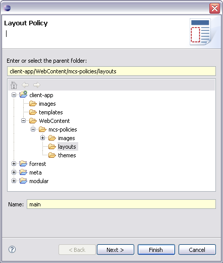
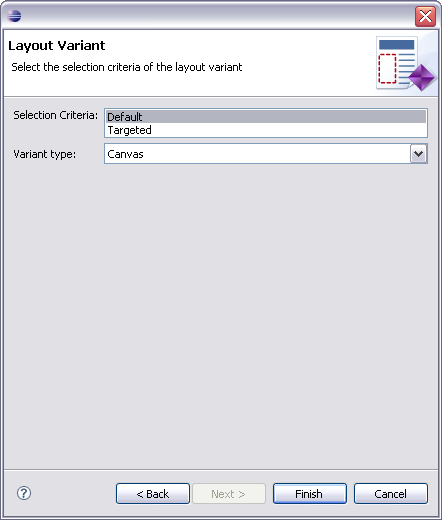
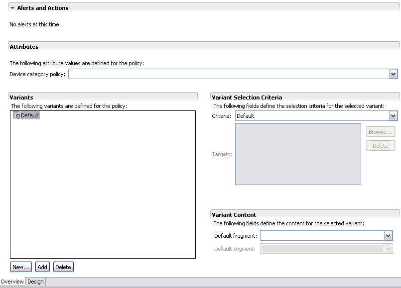

Layouts specify the physical position of elements on pages. To display content on a range of devices you need to specify a layout policy that contains variants that are suitable for different device characteristics.
We will start by creating main layout policy used by majority of the application widgets. In the next step we will design its structure.

As explained in Adding an image component, most component variants are device specific, targeted at a particular device or device family. However, we will not create a device specific layout. We will set selection criteria to 'Default', instead. Please refer to the Getting started with MCS tutorial to learn about device specific variants.

The Layout Editor has two pages, an Overview page listing the device layouts and their general attributes, and a Design page where you can develop your layout.
